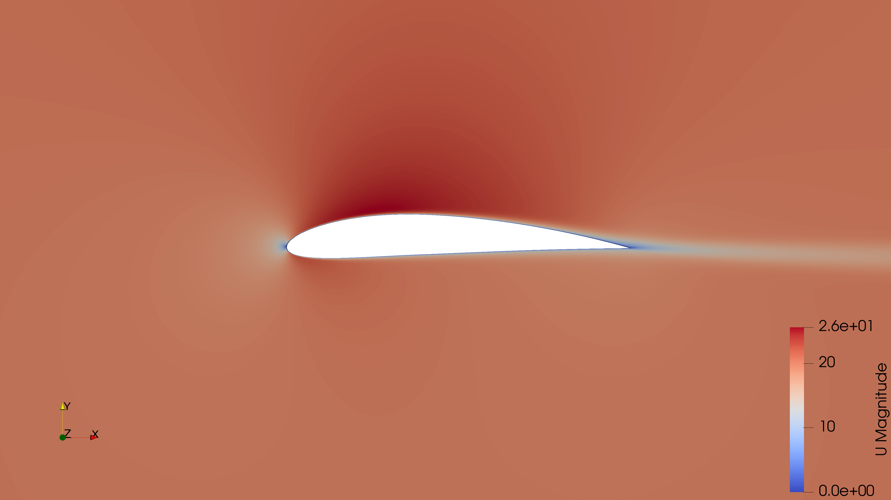
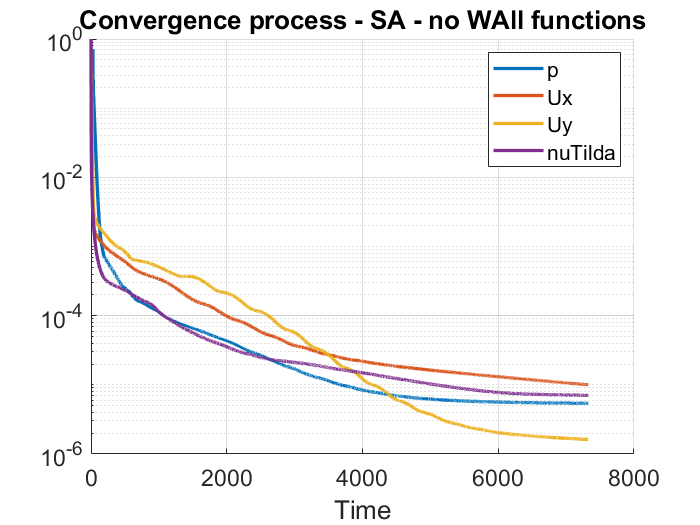
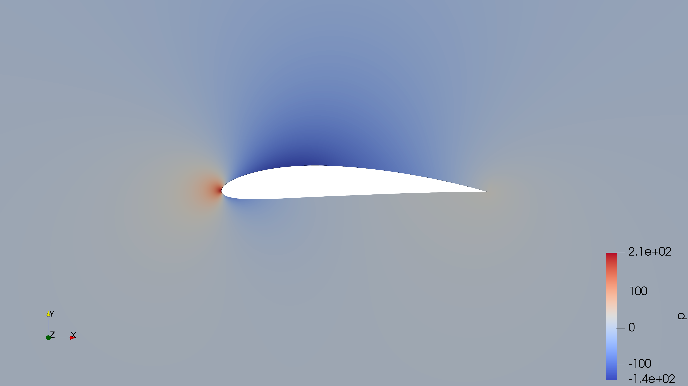
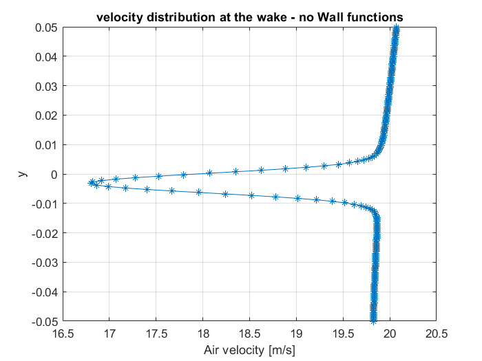
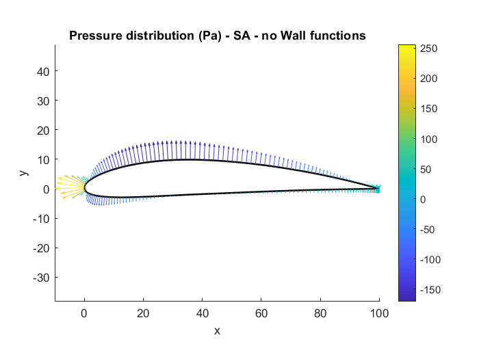
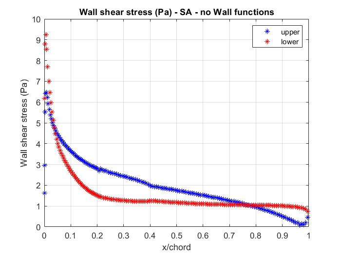
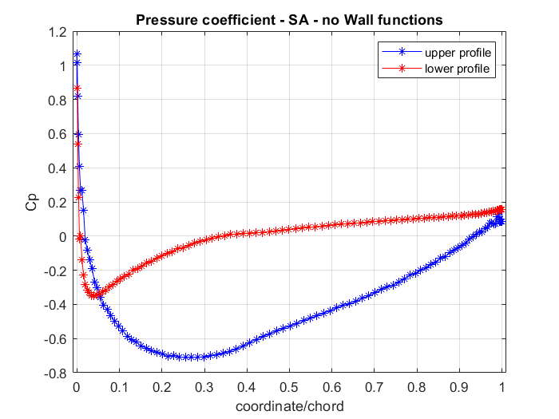

Engineering Challenge
Predict turbulent flow around a NACA 4412 profile while quantifying the influence of mesh refinement, turbulence model and near-wall treatment on wake behaviour and aerodynamic coefficients.
Computational Fluid Dynamics · External Aerodynamics
Turbulence-model and near-wall comparison around a cambered airfoil
A mesh-independence and turbulence-modelling study using Spalart–Allmaras and k–ε models, followed by a wall-resolved simulation of pressure, wake and aerodynamic coefficients.

Predict turbulent flow around a NACA 4412 profile while quantifying the influence of mesh refinement, turbulence model and near-wall treatment on wake behaviour and aerodynamic coefficients.
The Challenge
The study considers a NACA 4412 airfoil with a 0.1 m chord in a 20 m/s free stream. The external domain extends approximately ten chord lengths around the profile to prevent the boundaries from disturbing the local solution.
A six-block topology and a 200-point spline describe the cambered surface and provide controlled cell alignment around the leading edge, trailing edge and wake. The primary challenge was to change resolution without degrading mesh quality or near-wall consistency.
Turbulence Strategy
Wall Functions
Wall Resolved
Mesh Independence
Three meshes were assessed for both wall-function models. Their coefficient trends showed progressively smaller changes, supporting the use of the finest cases as an acceptable first approximation of a mesh-independent solution.
The final wall-resolved mesh used up to 1,000 streamwise and 280 wall-normal cells in the principal blocks. Its non-orthogonality index was 10.58 and skewness 0.795, while average y+ remained at 0.986.

Flow Results
Velocity

Pressure
Post-Processing

Wake

Surface Pressure
Near-Wall Aerodynamics


Outcome
Aerodynamic Coefficients
Near-Wall Quality
Methods & Tools